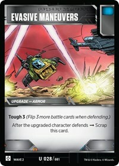
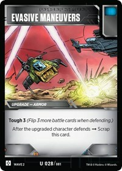

Avoiding Scrapping
Bits and Bolts - Exploring TFTCG Synergy
2020.06.26
Welcome to Bits and Bolts, a series intended to help Transformers the Trading Card Game newcomers discover some of the valuable interactions between different cards.
A lot of the Transformers game is built around the concept of events. Each turn in a Transformers game is made up of a series of events. Cards on the battlefield are listening for those events, and when the events happen, effects on the listening cards trigger.
A pair of events you will see a lot of are "when this attacks" and "when this defends"; or as a short-hand that covers both; "when this battles". Many cards listen to these events, though they may not use that exact "when this" language. For example, Wave 1's Dinobot Sludge states that "When one of your Dinobots attacks → Repair 1 damage from it", and Wave 2's Decepticon Crown says "When one of your Decepticon attacks → Plan 1". Despite the slightly different language, all of these respond to the same event.
Many of these events are described in the Expanded Rules 2.0 document. For example, the battle events are covered in section 3.A.5:
"3.A.5. Any ability that triggers “when this attacks,” “when this defends,” “when this battles,” or similar and doesn’t refer to the results of battle cards being flipped resolves."
Further down in that document is another event, namely the "after this attacks". It's covered in section 4.1:
4.1. After damage is done, any ability that happens “after the attack” happens, including the effects of green battle icons.
 

While it's not stated explicitly in the document, we assume that this section also covers "after this defends". An example of a card with "after this attacks" is the ever popular Grenade Launcher, while Evasive Maneuvers is an example that triggers on "after this defends". In each case, and with Blast Shield and Power Punch, the cards scrap themselves after the attack.
Wave 4 changed the language it uses for this type of card. Instead of saying "after this attacks", they now say "When the upgraded character attacks → Scrap this card after the battle". Instead of triggering directly on section 4.1, they now trigger on section 3.A.5, attaching an instruction that will happen at 4.1. This change, applied to the Weapons: Crowbar, Crystal of Power, and Fusion Borer, and to the Armors: Emergency Barricade and Crystal of Power again, allows for some nice synergy with a couple of the newer characters to the game.
Sergeant Soundblaster arrived with Wave 4, and his Bot mode states that "When this attacks", "You may play a black battle icon Weapon from your scrap pile onto this". Three of the black battle iconed Weapons you can play on Soundblaster are the previously mentioned Crowbar, Crystal of Power, and Fusion Borer. What's especially nice with these three weapons, is that they do not have to scrap when Soundblaster uses his ability. This is because an event is a point in time, rather than a period of time. Cards that show up after the point in time are not triggered. Let's look into that a bit more closely.
- The player chooses Sergeant Soundblaster to attack an opponent card.
- This enacts the "When this attacks" event on Sergeant Soundblaster.
- The player searches the scrap pile and applies a Crowbar to Sergeant Soundblaster.
- As Crowbar wasn't on the battlefield when the "When this attacks" event occurred, no instruction to scrap the card is attached to the Crowbar. At least not until Sergeant Soundblaster attacks again.
Arriving in Wave 5, Autobot Nautica has a similar skip-the-scrap, but this time with Armors. Her Bot mode states "When this defends → You may play an Armor onto her". This works nicely with Crystal of Power and Emergency Barricade. By the time you play one of those Armors onto Nautica, the "When this defends" event has passed and they will not be scrapped after that defense.

Wave 1's Chop Shop is another character that can skip-the-scrap, but in most decks it would be unlikely to work him into that position with one of the new Weapons or Armors. He might however amplify the trickery of Soundblaster or Nautica. There are some other possibilities as well, if future waves provide us with the right battle cards. For example, Captain Ironhide and Buzzsaw are two other characters who have this potential, both of them let you upgrade with a Blue battle iconed Weapon when they attack, however there are no Blue battle iconed weapons with the "When the upgraded character attacks" language. Ramhorn is yet another, if there were a white battle iconed Armor that used this language.
As if this wasn't enough, Wave 5 also gave us two cards to give Soundblaster and Nautica further fun. Industrial-Grade Phase Change is a weapon that you can scrap for +3 Attack "when the upgraded character attacks", and Decoy Flares is an Armor that can be scrapped for +2 Defence. Soundblaster can trivially get +5 attack by scrapping and re-equpping the Phase Change, or +6 if a Crystal or Fusion Borer was attached, while Nautica can turtle up with +5 defence if you scrap the Decoy Flares and play an Emergency Barricade.
.Given we're talking about avoiding scrapping an upgrade, we should also acknowledge Wave 3's Backup Bag, a Utility that can be scrapped whenever one of your cards makes you scrap an upgrade. That would, for example, include a Grenade Launcher scrapping itself after an attack.
Thank you for reading; I hope this provided you with some new synergies to play with.